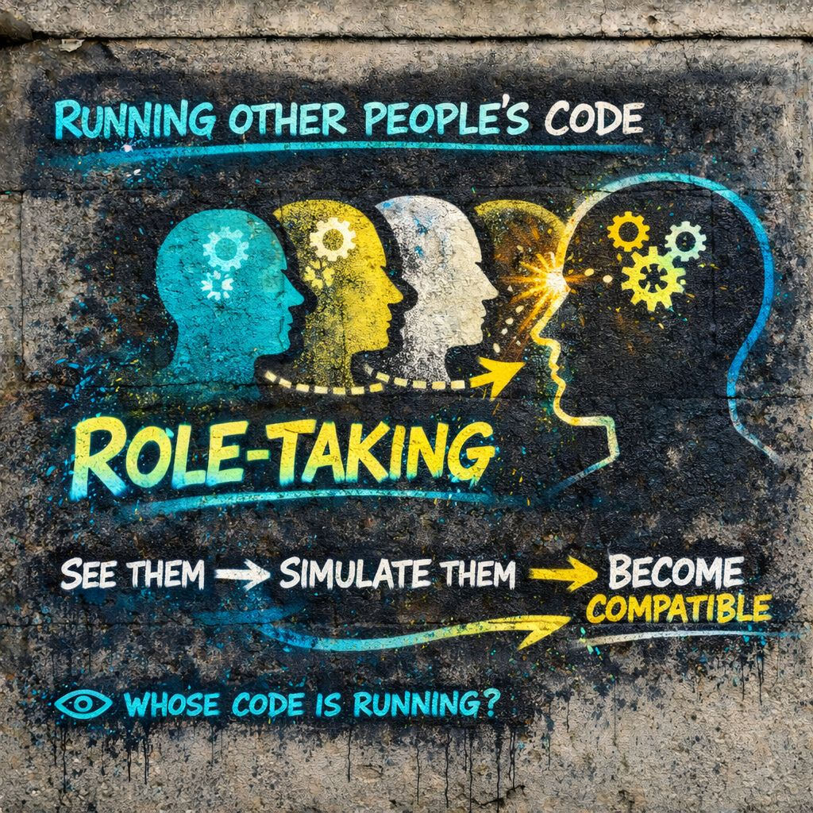

🎭 Role-Taking
Sometimes the room is rewriting you.”
⚙️ simulate them
🧩 infer the rules
🎭 become compatible
👁️ Useful skill.
Dangerous autopilot.
📍 Foundation
For Mead, role-taking is one of the basic ways the self forms.
It means learning to imagine the perspective of another person and adjusting yourself in relation to it.
A child plays parent, teacher, cop, hero, monster, cashier, preacher.
Not because the child has fully become those things, but because the child is learning:
- how others act
- what others expect
- how a social position feels from the inside
⚙️ IPT Translation
Or more sharply:
inside your own system.
Not perfectly. Not magically. But enough to model:
- what they might think
- what they might do
- what they expect from you
- what kind of self would “fit” the scene
🧠 Why This Matters
Role-taking is not just empathy.
It is one of the engines of identity formation.
Every time you simulate another role, you are not only understanding them.
You are also learning:
- which version of you belongs near them
- which response is acceptable
- which identity posture works in the situation
📡 The IPT Process
🎭 simulate it internally
🧩 infer expectations
⚙️ adjust self accordingly
🧠 store the pattern for later
Done once, this is adaptation.
Done repeatedly, this becomes structure.
🪞 Examples In Daily Life
You already do this constantly:
- talking differently to a boss than to a friend
- softening around someone fragile
- bracing around someone dominant
- posting differently depending on who may see it
- anticipating what a group will find cringe, admirable, weak, dangerous, or cool
You are testing versions of self against modeled positions.
🎮 Role-Taking As Social VR
A good IPT image for it:
You put on invisible helmets all day:
- friend helmet
- rival helmet
- authority helmet
- lover helmet
- audience helmet
- outcast helmet
Then you adjust.
That flexibility is not fake by default. It is part of social intelligence.
When does flexibility become capture?
⚠️ When Role-Taking Turns Into Self-Override
Role-taking is useful until it starts replacing direct contact with over-simulation.
Instead of:
The system jumps to:
“What would someone like that want from me?”
“Which version of me keeps the scene stable?”
At that point, role-taking becomes a kind of internal bureaucracy.
🌐 Role-Taking + Generalized Other
The generalized other is the big internal crowd.
Role-taking is one of the ways that crowd got built.
First you model individuals:
- this teacher
- this parent
- this sibling
- this group leader
- this audience type
Over time, those separate simulations get compressed into:
“what they expect”
“how one is supposed to be”
Role-taking is one of the workshops where the internal crowd is manufactured.
⚡ Role-Taking + Velocity
Sometimes role-taking is slow and reflective:
Other times it is lightning-fast:
- instant posture shift
- instant self-edit
- instant compliance
- instant defensiveness
It feels like automatic identity adjustment.
🧩 Role-Taking + Meaning Lock
You simulate another person’s perspective.
Then you decide what the moment means based on that simulation.
You rapidly model their perspective.
You conclude they think you are foolish.
That meaning locks.
Identity reacts.
But maybe the look meant nothing.
Role-taking can become a meaning factory based on partial data.
📱 Modern Upgrade: Parasocial Role-Taking
Mead was working in a world of direct interaction.
Now people role-take with:
- influencers
- audience archetypes
- followers
- enemies
- platforms
- imagined public reactions
- entire online tribes
“How would my side interpret this?”
“How would their side weaponize this?”
“How does a winning persona behave here?”
Now role-taking is fused with performance engineering.
🎭 Running Other People’s Code
When you role-take, you are temporarily installing a behavioral logic that is not originally yours.
Not fully. Not permanently. But enough to shape response.
You load:
- their probable priorities
- their fears
- their norms
- their style of reading the scene
Possible silent occupation.
⚖️ Healthy vs Distorted Role-Taking
Healthy Role-Taking
- empathy
- coordination
- diplomacy
- humor
- social range
- communication across positions
Distorted Role-Taking
- people-pleasing
- self-erasure
- chronic self-monitoring
- identity drift
- pre-compliance
- audience-shaped behavior
🔍 How To Spot It In Real Time
Signs you are deep in role-taking:
- you rehearse someone else’s reaction before finishing your own thought
- you feel your posture change depending on imagined judgment
- you edit your expression for reception, not clarity
- you are more aware of how the scene reads than what you perceive
- you inhabit a role because it fits the environment, not because it feels true
or is it running you?
👁️ IPT Intervention Point
IPT does not attack role-taking itself.
It asks for a pause between:
and
becoming the version of yourself that simulation demands
Inside that pause, you can ask:
- “Am I understanding them, or obeying them?”
- “Am I modeling perspective, or surrendering mine?”
- “Is this adaptation, or self-erasure?”
- “Whose code is running right now?”
🔓 The IPT Edge
Mead Gives
the self forms through taking the role of the other
IPT Adds
in modern pressure environments, role-taking can become high-speed identity editing
IPT is interested in:
- how often it happens
- how fast it happens
- who benefits from it
- whether the person can still notice it happening
👁️ Final Distillation
to simulate another position.
It helps build the self.
But under pressure, it can turn into running other people’s code until your own signal gets crowded out.
Sometimes the room is rewriting you.
⚙️ simulate them
🧩 infer the rules
🎭 become compatible
👁️ Useful skill.
Dangerous autopilot.